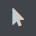
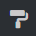
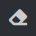
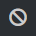
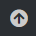
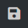
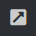
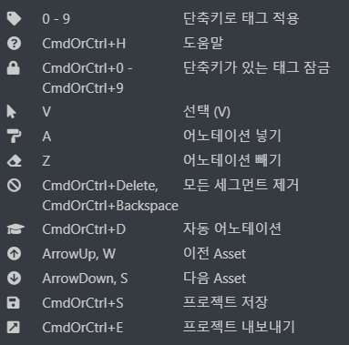

세그먼트 어노테이션 편집¶
본 페이지에서는 세그먼트 어노테이션 편집기를 이용한 어노테이션 방법에 대하여 서술합니다.
세그먼트 어노테이션은 세그먼테이션을 통해 생성된 세그먼트들에 태그 및 속성을 설정하는 방식으로 어노테이션 작업을 수행합니다.
본 세그먼트 어노테이션을 수행하기 위해선 세그멘테이션 데이터 값을 불러올 수 있어야 합니다. 보다 자세한 사항은 사전 준비 를 참조해주세요.
인터페이스¶
아래 그림은 주 메뉴에서 세그먼트 어노테이션 편집을 선택했을 때 보이는 인터페이스를 나타냅니다.

세그먼트 어노테이션 편집 인터페이스¶
상기 인터페이스의 각 화면 영역의 기능은 다음과 같습니다.
(A): 주 메뉴, (B): 이미지 목록, (C): 편집 도구, (D): 어노테이션 태그 편집, (E): 주 편집 화면, (F): 어노테이션 속성 편집
(A)에 대한 설명은 주 메뉴 설명 을 참조해주세요.
사용자는 (B)를 통해 편집할 이미지를 선택하고 (C), (D), (E)를 통해 어노테이션을 생성한 후 (F)를 통해 선택된 어노테이션에 대한 속성을 편집하게 됩니다.
편집 도구 설명 - 인터페이스 (C)¶
: 선택, 영역을 선택하거나 편집할 때 사용합니다.
: 어노테이션 생성, 마우스 왼쪽 버튼 드래그를 이용하여 (D)에서 선택된 태그에 대한 어노테이션을 생성합니다.
: 어노테이션 제거, 마우스 왼쪽 버튼 드래그를 이용하여 어노테이션을 제거합니다.
: 모든 어노테이션 제거, 모든 세그먼트의 어노테이션을 제거합니다.
: 자동 어노테이션, 현재 버전에선 사용 불가합니다.
: 이전 어셋, 이전 이미지 및 작업으로 이동합니다.
 : 다음 어셋, 다음 이미지 및 작업으로 이동합니다.
: 다음 어셋, 다음 이미지 및 작업으로 이동합니다.: 프로젝트 저장, 프로젝트를 저장합니다.
: 프로젝트 내보내기, 프로젝트 산출물을 생성합니다. 자세한 내용은 어노테이션 결과 산출 를 참조해주세요.
어노테이션 태그 선택 - 인터페이스 (D)¶
인터페이스의 (D) 영역을 통해 어노테이션 태그를 적용할 수 있습니다. 하나의 영역은 하나의 태그만 적용이 가능합니다.
어노테이션 생성 - 인터페이스 (E)¶
상기 편집 도구 중 가 선택된 상태에서 마우스 왼쪽 드래그를 통해 상기 단계에서 선택된 어노테이션을 세그먼트에 마킹합니다.
어노테이션 삭제 - 인터페이스 (E)¶
상기 편집 도구 중 가 선택된 상태에서 마우스 왼쪽 드래그를 통해 해당 세그먼트의 어노테이션을 삭제합니다. 상기 편집 도구 중 가 선택된 상태에서도 마우스 오른쪽 드래그를 이용해 같은 작업을 수행할 수 있습니다.
어노테이션 선택 - 인터페이스 (E)¶
아이콘을 눌러 세그먼트의 어노테이션을 선택합니다.
어노테이션이 선택되었을 때 인터페이스의 (D) 영역은 해당 어노테이션 태그 값을, 인터페이스의 (F) 영역은 해당 어노테이션 속성 값을 표출합니다.
어노테이션 속성 편집 - 인터페이스 (F)¶
어노테이션이 선택된 상태에서 인터페이스의 (F) 영역을 통해 어노테이션 속성을 편집할 수 있습니다. 해당 영역은 어노테이션이 선택되었을 때만 활성화됩니다. 편집 후 반드시 하단의 submit 버튼을 눌러 저장을 수행합니다.
단축키¶
세그먼트 어노테이션 편집기는 아래와 같은 단축키를 지원합니다.
